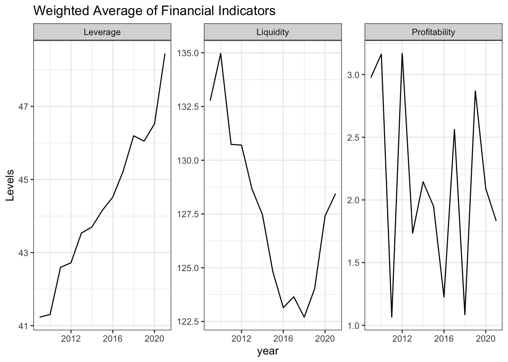
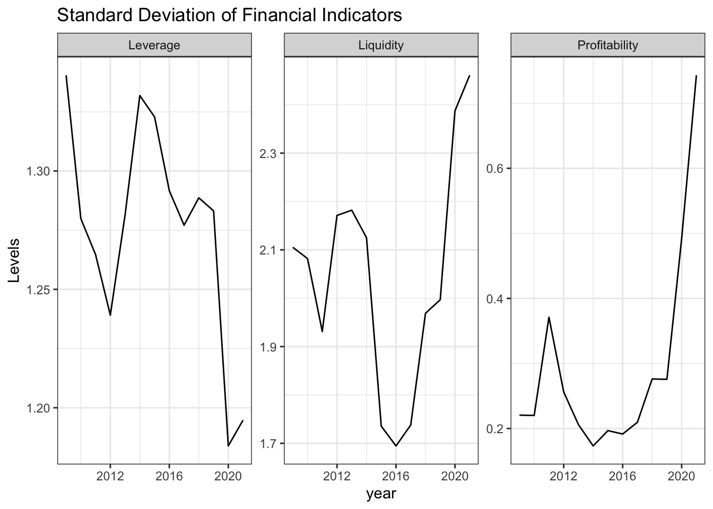
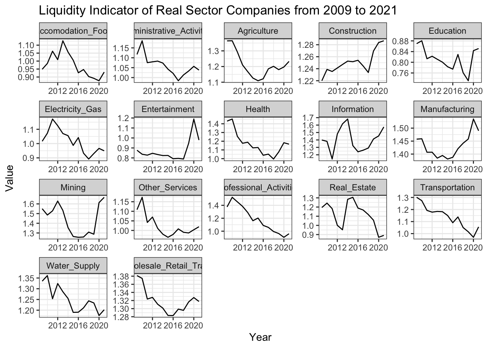
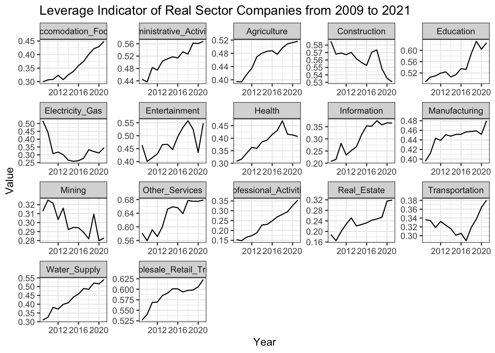
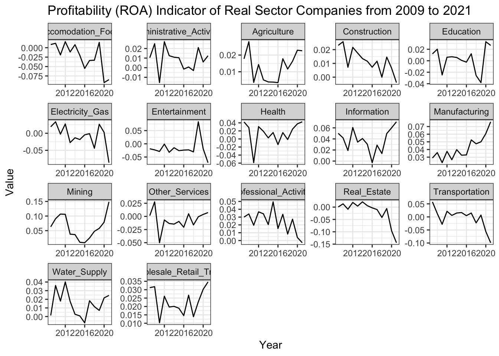
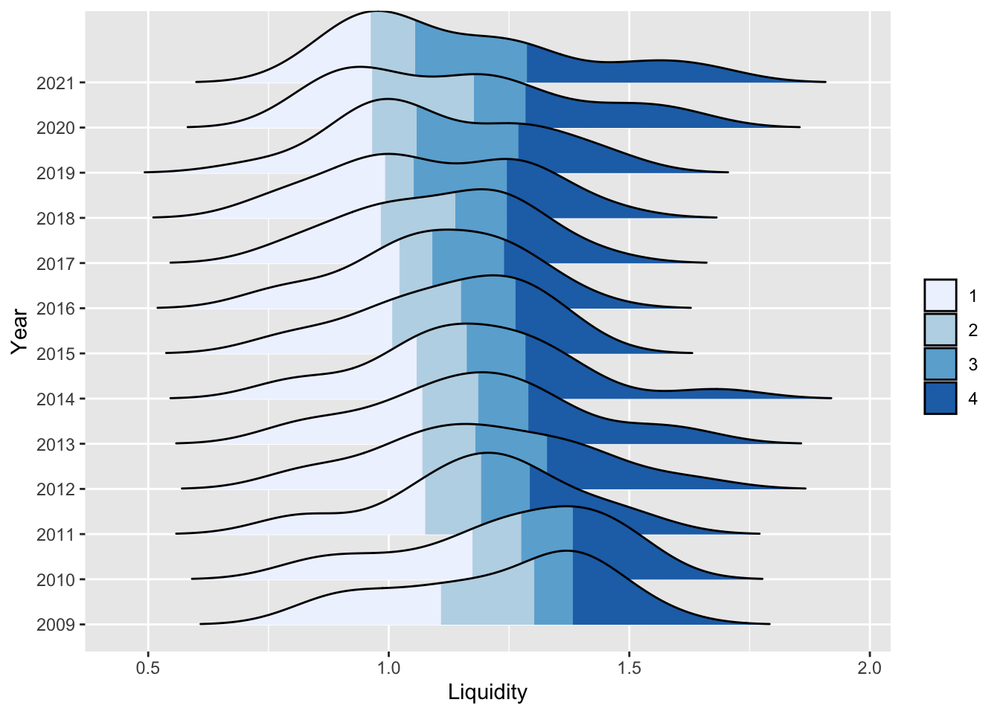
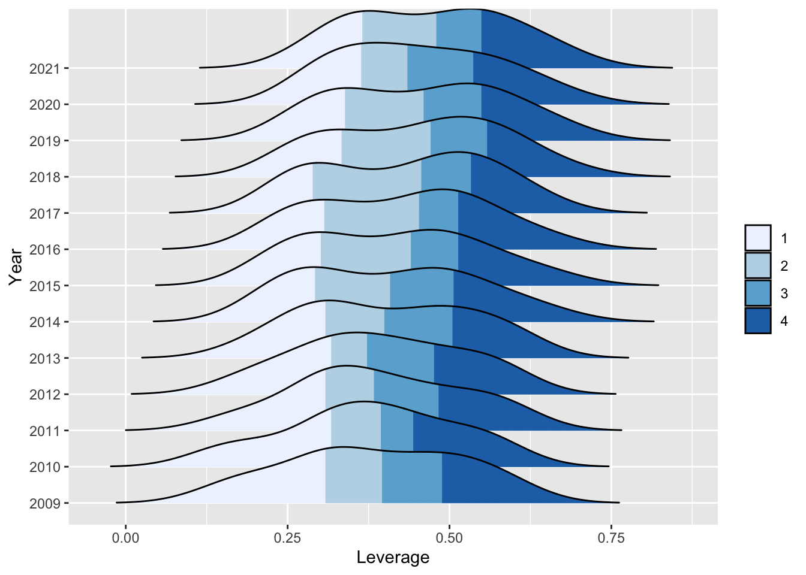
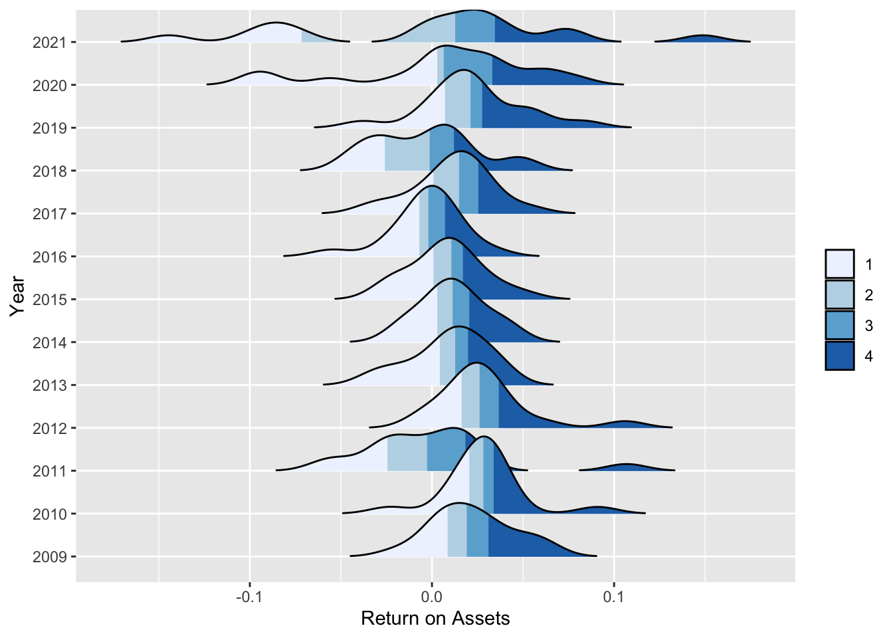
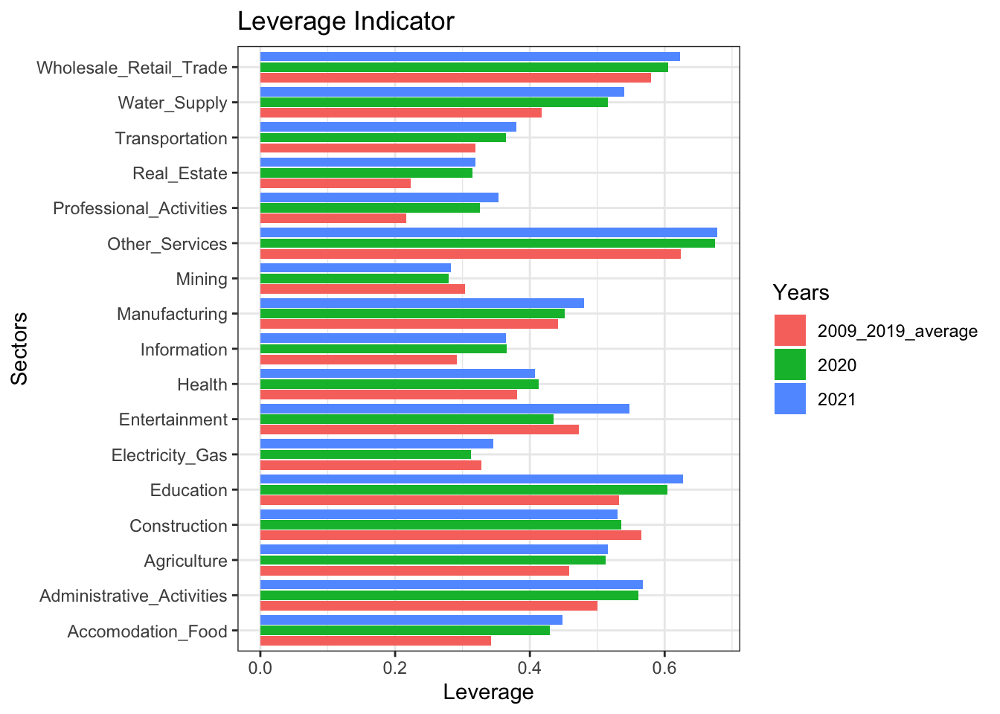
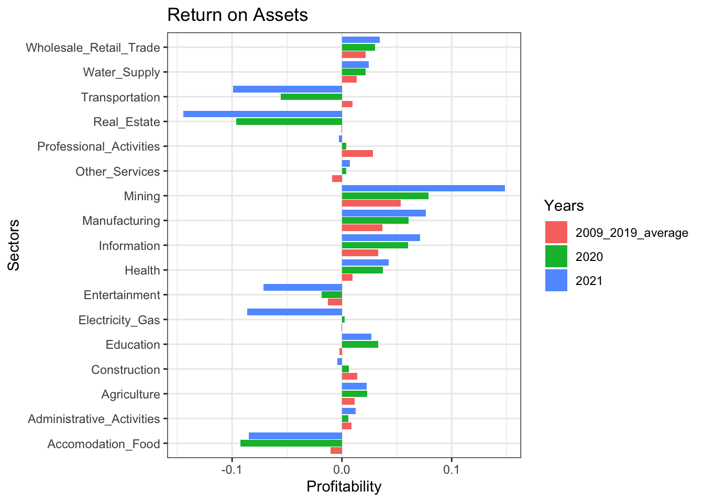

In this report, an analysis of sectoral financial developments in Turkey for the period between 2009-2021 using various datasets from TURKSTAT is presented. Widely used financial metrics are employed in our analysis in order to overview financial position of real sector in Turkish economy. These metrics are then used to construct a Financial Fragility Index in an attempt to gauge financial soundness of each sector compared to each other.
Real sector firms are observed to rely more on liability sources and the economy as a whole has become more leveraged in this period, which is considered a natural result of credit oriented policies for the last decade in the Turkish Economy.
Liquidity position of the firms deteriorated in this period although a slight correction is observed in the last few years. Transportation, Accomodation-Food, Real Estate and Professional Activities are the sectors whose liquidity position deteriorate most during Covid-19.
Profitability of real sector firms stayed on the positive territory although it followed a volatile pattern throughout the period. During Covid-19, the winners are Mining, Manufacturing, Information and Health in terms of improvement in their profits and this improvement seemed to continue in 2021. On the opposite end of the picture, Transportation and Services sectors were seen to be in trouble in terms of profitability.
Leverage of real sector firms increase in a synchronised way whereas variation across sectors increases significantly for liquidity and profitability indicators.
For 2021, a cross sectional analysis demonstrates that services related sectors are considered most risky in terms of financial metrics defined. To be specific, Education is considered most risky sector mostly due to its poor liquidity and high leverage which increases the firms’ probability of default as it raises doubts about payment of short term debts.
Introduction
Financial overview of Turkish real sector firms is aimed to be presented through financial statements within a simple framework. A special emphasis is given to Covid-19 period to determine how financial indicators of sectors are affected from the pandemic.
In this section, we introduce three main financial indicators to be used in our analysis.
1) Liquidity Indicator:
Liquidity is a measure of a company’s ability to pay off its short-term liabilities—those that will come due in less than a year. Current Ratio is calculated as liquidity indicator as below:
A higher ratio indicates the business is more capable of paying off its short-term debts. These ratios will differ according to the industry, but in general ratios from 1.5 to 2.5 is acceptable. Lower ratios could indicate liquidity problems, while higher ones could signal there may be too much working capital tied up in inventory.
2) Leverage Indicator:
A leverage ratio is any one of several financial measurements that look at how much capital comes in the form of debt (loans) or assesses the ability of a company to meet its financial obligations. Ratio of total loans to total assets is used in our analysis to observe the reliance on liabilities.
\(Leverage = \frac{Total\,Loans}{Total\,Assets}\)
3) Profitability Indicator:
Return on assets (ROA) is used in our analysis as a profitability indicator which refers to a financial ratio that indicates how profitable a company is in relation to its total assets. Market participants use ROA to see how well a company uses its assets to generate profit. Our calculation is based on the formula given below:
Real sector firms are observed to rely more on liability sources and the economy as a whole has become more leveraged in this period, which is considered a natural result of credit oriented policies for the last decade in the Turkish Economy.
Liquidity position of the firms deteriorated in this period although a slight correction is observed in the last few years.
Profitability of real sector firms stayed on the positive territory although it followed a volatile pattern throughout the period.
Code
#Calculation and plot of weighted average financial indicatorsbs_df_economy <- bs_df %>%mutate(current_ratio = bs_df$"I-Current_assets"/ bs_df$"III-Short-term_liabilities", leverage = bs_df$"III-Short-term_liabilities"/ bs_df$"Total_assets",return_on_equity = bs_df$"net_income_is"/ bs_df$"V-Own_funds",return_on_assets = bs_df$"net_income_is"/ bs_df$"Total_assets") %>%select(c(sector_code:year),c(current_ratio:return_on_assets), Total_assets)bs_df_economy_graph <- bs_df_economy %>%group_by(year) %>%summarize(Liquidity =weighted.mean(current_ratio, Total_assets) *100,Leverage =weighted.mean(leverage, Total_assets) *100,Profitability =weighted.mean(return_on_assets, Total_assets) *100)bs_df_economy_graph %>%pivot_longer(-year, names_to ="indicator_yearly", values_to ="value") %>%ggplot(aes(x = year, y = value)) +geom_line() +facet_wrap(~indicator_yearly, scales ="free") +theme_bw() +labs(y ="Levels", title ="Weighted Average of Financial Indicators")

Code
#Calculation and plot of standard deviation of financial indicatorsbs_df_economy %>%group_by(year) %>%summarize(Liquidity =sd(current_ratio) *10,Leverage =sd(leverage) *10,Profitability =sd(return_on_assets) *10) %>%pivot_longer(-year, names_to ="std_yearly", values_to ="value") %>%ggplot(aes(x = year, y = value)) +geom_line() +facet_wrap(~std_yearly, scales ="free") +theme_bw()+labs(y ="Levels", title ="Standard Deviation of Financial Indicators")

Sectoral Overview
Construction, Mining, Information and Manufacturing are the sectors which have an upward trend in their liquidity position and deemed strong in terms of its level as of 2021 as compared to others.
Leverage of real sector firms increased significantly in this period except Construction and Electricity-Gas sectors, which lowers the share of external liabilities in the financing of their assets and can be considered less risky as compared to the beginnning of the period.
In terms of ability to return assets into profits, winner sectors are Manufacturing, Information and Mining where as the harming effect of the COVID-19 is observed in Accomodation-Food, Entertainment and Transportation which is not surprising as these sectors are more dependent on social mobility and the recovery in the period after March-2020 is only gradual. A more benign picture can be observed in 2022 when a complete normalisation in Covid related restrictive policies has been observed. Furthermore, a consistent deterioration in the profits of Construction sector is eye-catching.
Code
ggplot(data = bs_df_new[bs_df_new$Indicator =="current_ratio",], aes(x = year, y = Value)) +geom_line() +labs(title ="Liquidity Indicator of Real Sector Companies from 2009 to 2021", x ="Year") +facet_wrap(~sector_name, scales ="free") +theme(panel.grid =element_blank()) +theme_bw()

Code
ggplot(data = bs_df_new[bs_df_new$Indicator =="leverage",], aes(x = year, y = Value)) +geom_line() +labs(title ="Leverage Indicator of Real Sector Companies from 2009 to 2021", x ="Year") +facet_wrap(~sector_name, scales ="free") +theme(panel.grid =element_blank()) +theme_bw()

Code
ggplot(data = bs_df_new[bs_df_new$Indicator =="return_on_assets",], aes(x = year, y = Value)) +geom_line() +labs(title ="Profitability (ROA) Indicator of Real Sector Companies from 2009 to 2021", x ="Year") +facet_wrap(~sector_name, scales ="free") +theme(panel.grid =element_blank()) +theme_bw()

Density plots make it possible to observe complete distribution of indicators among sectors in a specific year. In the plots below, distributions are segmented by colors with respect to 25th, 50th and 75th percentiles where white shaded region denotes sectors that are below the 25th percentile and dark blue region corresponds to sectors above 75th percentile of the distribution with respect to the financial indicator.
For liquidity, the distribution seems to became right skewed at the end of 2021 vs its left skewed shape back in 2009 which implies that firms’ liquidity position decreases on average while there exists sectors that are in a stronger position in terms of liquidity.
For leverage, aside from increasing median leverage among sectors, no significant change in the shape of the distribution is observed.
For profitability, the obvious picture is that deviation of profitability across sectors increased considerably. Pandemic shock resulted in higher portion of sectors within the economy incurring higher net losses in 2020 as compared to 2019. Although a rebound is expected in profitability of sectors in 2021, distribution presents a different picture where a clear separation between sectors exist such that sectors in loss at the end of 2020 incur higher losses. On the other hand, the gains of some sectors increased comparatively higher in this period and the distribution became flat with outliers in the both end.
Code
# Liquiditybs_df_new %>%pivot_wider(names_from = Indicator, values_from = Value) %>%select(year, current_ratio) %>%arrange(year) %>%ggplot(aes(x = current_ratio, y =factor(year), fill =stat(quantile))) +stat_density_ridges(quantile_lines =FALSE,calc_ecdf =TRUE,geom ="density_ridges_gradient", rel_min_height =0.005) +scale_fill_brewer(name ="") +labs(y ="Year", x ="Liquidity")

Code
# Leveragebs_df_new %>%pivot_wider(names_from = Indicator, values_from = Value) %>%select(year, leverage) %>%arrange(year) %>%ggplot(aes(x = leverage, y =factor(year), fill =stat(quantile))) +stat_density_ridges(quantile_lines =FALSE,calc_ecdf =TRUE,geom ="density_ridges_gradient", rel_min_height =0.005) +scale_fill_brewer(name ="") +labs(y ="Year", x ="Leverage")

Code
# Profitabilitybs_df_new %>%pivot_wider(names_from = Indicator, values_from = Value) %>%select(year, return_on_assets) %>%arrange(year) %>%ggplot(aes(x = return_on_assets, y =factor(year), fill =stat(quantile))) +stat_density_ridges(quantile_lines =FALSE,calc_ecdf =TRUE,geom ="density_ridges_gradient", rel_min_height =0.005) +scale_fill_brewer(name ="") +labs(y ="Year", x ="Return on Assets")

Covid-19 Shock and Sectoral Financial Developments
A closer look for the perfomance of Turkish economy in the last two years is aimed to be investigated in comparison to previous years. 2020 and 2021 is important especially for diagnosing the effect of Covid-19 outbreak and its consequent impact on the financial status of real sector firms.
Firstly, Transportation, Accomodation-Food, Real Estate and Professional Activities are the sectors whose liquidity position deteriorate most during Covid-19. This result is not abnormal as social distancing measures and decline in mobility affect those sectors most.The rest seems to be less affected and even there are sectors who experience a considerable improvement in terms of liquidity which might be due to frequency of our data. The covid-19 outbreak started in first quarter of 2020 and then the government policies to support the economy could be one reason for the improvement of the sectors.
Secondly, leverage indicator seemed to rise throughout the economy except a few sectors which is considered natural in response to credit oriented policies of government to support real sector firms against Covid-19 shock.
Finally, the winners are Mining, Manufacturing, Information and Health in terms of improvement in their profits and this improvement seemed to continue in 2021. On the other end of the picture, Transportation and Services sectors were seen to be in trouble in terms of profitability.
#Leverage Indicatorbs_df_new %>%pivot_wider(names_from = Indicator, values_from = Value) %>%filter(year %in%2020:2021) %>%select(c(sector_name, year, leverage)) %>%pivot_wider(names_from = year, values_from = leverage) %>%left_join(bs_df_average[,c("sector_name", "lev_ave")], by ="sector_name") %>%rename("2009_2019_average"="lev_ave") %>%pivot_longer(-sector_name, names_to ="period") %>%ggplot(aes(x = sector_name, y = value, fill =factor(period))) +geom_col(position ="dodge2")+coord_flip() +labs(y ="Leverage", x ="Sectors", title ="Leverage Indicator", fill ="Years") +theme_bw()

Code
#Profitability Indicatorbs_df_new %>%pivot_wider(names_from = Indicator, values_from = Value) %>%filter(year %in%2020:2021) %>%select(c(sector_name, year, return_on_assets)) %>%pivot_wider(names_from = year, values_from = return_on_assets) %>%left_join(bs_df_average[,c("sector_name", "pro_ave")], by ="sector_name") %>%rename("2009_2019_average"="pro_ave") %>%pivot_longer(-sector_name, names_to ="period") %>%ggplot(aes(x = sector_name, y = value, fill =factor(period))) +geom_col(position ="dodge2")+coord_flip() +labs(y ="Profitability", x ="Sectors", title ="Return on Assets", fill ="Years") +theme_bw()

Financial Fragility Index (FFI)
Up until now, financial position of Turkish economy is evaluated based on the three indicators obtained through balance sheets and income statements of sectors. In this section, an index demonstrating financial healthiness of the sectors is constructed so that a comparative analysis of Turkish economy through time can be conducted on a holistic perspective.
The methodology used in the construction of Financial Fragility Index (FFI) consists of the following steps:
For each financial indicator (Liquidity, Leverage and Profitability) percentile of each sector is found. To be more specific, the higher the rank of a sector, the worse it is in terms of financial soundness. In other words, for liquidity, the sector is less liquid, for leverage, the sector has higher leverage and for profitability, the sector is less profitable.
After finding each sectors’ rank for each financial indicator, simple average is calculated and index value is obtained.
The steps described above is repeated for each year between 2009-2021 and a time series of the index is found.
Although the index alone can not be taken into account alone to conclude that a certain sector is riskier than others financially for a specific time point, time series evolution gives a glimpse of where the sectors are heading into in terms of their financial strength.
Services sectors such as Accomodation-Food, Real Estate and Transportation have performed worse than other sectors and found themselves in a much more fragile position in terms of financial soundness.
For 2021, a cross sectional analysis demonstrates that services related sectors are considered most risky in terms of financial metrics defined previously.
Education is considered most risky sector mostly due to its poor liquidity and high leverage which increases the firms’ probability of default as it raises doubts about payment of short term debts.
Mining sector is the leading sector in terms of financial soundness according to all of the predefined metrics.
Further details regarding the whole period of 2009-2021 can be gained through the scorecard Application.
Does International Trade Matter for Financial Strength?
Tradable sectors are determined with respect to their trade volume such that “Agriculture”, “Manufacturing”, “Mining”, “Water_Supply” are considered in this group with highest trade volume. The rest is grouped as Non-Tradable sectors.
Two groups are compared with respect to financial fragility index. Sectors that are more export/import oriented are found to be less vulnerable where as non-tradable sectors that has higher exposure to local markets are considered to be riskier.
To sum up, Turkey has reached an average real growth rate of xx % for the period between 2009 and 2021. Credit oriented policies to finance growth and stimulate employment resulted in significant rise in leverage of Turkish firms. Besides, their liquidity positions deteriorate and profitabilities followed an oscillating pattern in the positive territory.
Financial Fragility Index points out that services sectors are financially most vulnerable to adverse shocks. Covid-19 period amplified their vulnerabilities. In this period, operations of companies become less profitable which is expected as volatility in financial markets increase and supply chain disruptions distort inventory management of companies on top of increasing production costs.